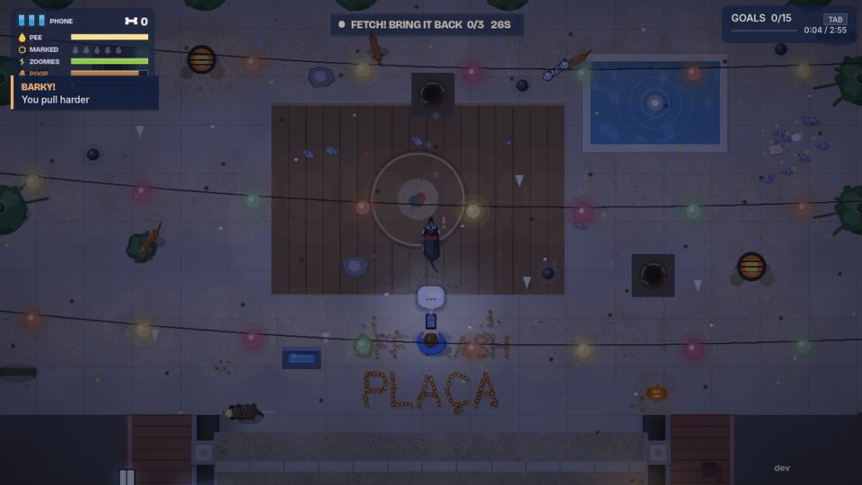

La Castanyada
The chestnut festival
All Saints' Eve on Castanyada night, warmed by glowing corner chestnut roasters and stalls piled with pine-nut panellets under paper lanterns. The smell of roast chestnuts hangs over every cobblestone while stray chocolates demand careful steering.
- Off-leash stop
- PLAÇA (Open plaça)
- Beat the clock
- Under 2:55
Screenshots



Goals (15)
- Mark 5 spots
- Have 4 good long sniffs
- Get the phone home without a scratch
- Get yourself home without a bump
- Get your business bagged
- Bring the ball back 3 times
- Bring Tofu the cat home
- Walk past every chocolate without a bite
- Have a good long drink
- Scarf down 2 dropped snacks
- Land an x3 trick combo
- Get the panellet without eating the candy
- Spell LEASH
- Find the hidden pernil
- Beat the clock (under 2:55)